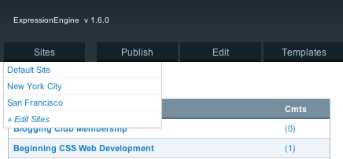
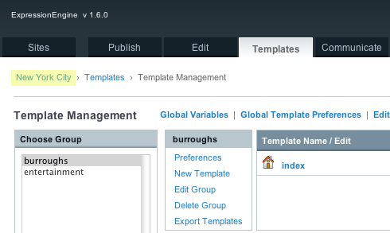
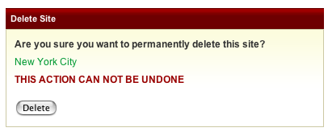

Managing Sites
- Intuitive Multiple Site Management
- No "Master" Site
- Delete a Site
- Installation Wide Assets
- Site Specific Preferences
- Accessing Site Specific Weblogs and Templates
- Find and Replace Utility
Intuitive Multiple Site Management
Managing each Site is very easy since its exactly like managing a single ExpressionEngine installation. To manage a Site, just select it from the Sites tab. This switches you to the Site's Control Panel and from there its exactly like working in a single ExpressionEngine Installation.

For example, to add a Template Group to the New York City Site, just select New York City from the Multiple Site Manager's Tab, click the Templates' Tab, and then proceed as normal.
You can always tell which Site is selected by looking at the Control Panel's bread-crumb navigation as highlighted below:

No "Master" Site
An important concept in the Multiple Site Manager is that there is no "Master" Site, there is only the Site you are currently viewing. For example, when you create a new Site the preferences copied to the new Site will be based off the Site you are currently viewing.
ExpressionEngine is the "hub" that runs all the Sites, but no one Site takes precedence above another and updating one Site does not update or alter other Sites unless you are updating an installation wide asset.
Delete a Site
To delete a Site, select Edit Sites from the Multiple Site Manager menu and choose Delete.
Important: Deleting a Site completely removes and deletes all information specific to that Site from the database including Weblogs and Templates.

Installation Wide Assets
The following apply installation wide and are not specific to a Site:
- Member Database
- Member Groups
- Add-ons (Modules, Plugins, Extensions)
Site Specific Preferences
Aside from the items mentioned above, every preference and feature in a ExpressionEngine installation can be set per Site. Instead of an exhaustive list that basically repeats the User Guide, here are some key areas to think about when creating Sites:
- Speciality Templates
- Email responses
- Member Profile templates
- Member Group Preferences
- Site specific Themes
The Multiple Site Manager is deceptive in some ways because it appears simple on the surface. But once you start using it the possibilities go very deep. The important concept is that almost all of a Sites preferences are unique to that Site.
For example, though Member Groups are shared installation wide, their preferences can be set per Site. This allows you to give Member Groups different permissions at different Sites. It also allows you to automatically assign a person to a Member Group depending on which Site they registered at.
Site specific Themes can be setup by creating a new Theme folder, selecting the appropriate Site, and updating the path in Admin --> System Preferences --> General Configuration.
Accessing Site Specific Weblogs and Templates
Weblogs and Templates are assigned to a Site and only available through the Control Panel when that Site is selected. This means a Weblog created in SiteA will not be visible when viewing SiteB through the Control Panel.
However, you can access any Weblog or Template from any Site for display on any Site at the Template level using the new site="" parameter.
This would allow, for example, creating an installation wide Announcement Weblog that can be displayed on all Sites.
Find and Replace Utility
The Find and Replace Utility has been updated to include searching in specific Sites. It can access all the Templates, Weblogs, and Preferences from all your Sites no matter which Site you are currently viewing.